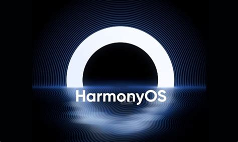

HarmonyOS (HMOS) (Chinese: 鸿蒙; pinyin: Hóngméng) is a distributed operating system developed by Huawei for smartphones, tablets, smart TVs, smart watches, personal computers and other smart devices. It has a multi-kernel design with dual frameworks: the operating system selects suitable kernels from the abstraction layer in the case of devices that use diverse resources.[4][5][6] HarmonyOS was officially launched by Huawei and first used in Honor smart TVs in August 2019.[7][8] It was later used in Huawei wireless routers, IoT in 2020, followed by smartphones, tablets and smartwatches from June 2021.[9] The operating system was initially based on code from the Android Open Source Project (AOSP) and the Linux kernel; many Android apps can be sideloaded on HarmonyOS.[10] The next iteration of HarmonyOS known as HarmonyOS NEXT was announced on August 4, 2023. It replaces the OpenHarmony multi-kernel system with its own HarmonyOS microkernel at its core, removes all Android code and supports only apps in its native App format.[11][12] It is currently in beta testing and is expected to launch in the fourth quarter of 2024.[13]
Izvor teksta